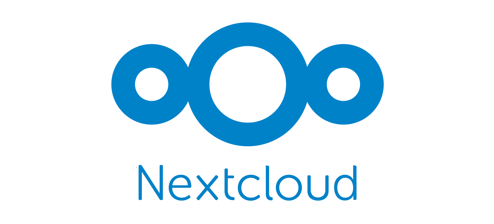
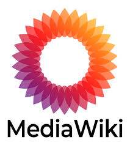
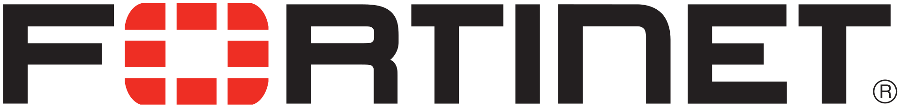

Mes projets
Serveur NextCloud
Mise en place d'un serveur NextCloud sur Debian pour la sauvegarde et le partage de fichiers en local ou à distance.
- NextCloud
- Debian
- Apache

Installation de MediaWiki
Déploiement d'un wiki interne avec MediaWiki sur une machine Debian pour documenter les procédures internes.
- MediaWiki
- Debian
- PHP/MySQL

Projet GregoireConstruction
Création et gestion du parc informatique de l'entreprise fictive GregoireConstruction : configuration de serveurs, scripts de sauvegarde et maintenance.
- Windows Server (DHCP, DNS, GPO)
- Debian (MariaDB, Apache, GLPI)
- OpenMediaVault (NAS)
- Script Bash (sauvegarde automatique)

Compétences
Linux : Expérience avec Debian, installation et gestion de serveurs, sécurisation et optimisation du système.
Windows Server : Administration de serveurs Windows, configuration de services AD, DHCP, DNS et stratégies de groupe (GPO).
Réseaux : Mise en place et gestion d'infrastructures réseau, configuration de serveurs et gestion des connexions.
Virtualisation : Utilisation de VMware pour créer et gérer des environnements virtuels adaptés aux besoins spécifiques des projets.
Cybersécurité : Sécurisation des systèmes et réseaux, configuration de serveurs web et bases de données avec les meilleures pratiques.
Base de données : Gestion et administration de bases de données avec MariaDB, automatisation de l'importation de fichiers Excel vers une BDD SQL.
Technologies apprises : Développement en C#, Python, HTML, CSS et SQL pour diverses applications et outils automatisés.
Stage
Orange Cyberdefense 2025 : Stage d'observation d'une durée de 6 semaines chez Orange Cyberdefense à Massy 91300. Découverte du métier d'analyste SOC (N2, N3) dans le service de Solution De Confiance et montée en compétence sur des pare-feu NGFW (Fortinet et Palo Alto Networks).
ACS Informatique 2026 : Stage BTS SIO SISR d'une durée de 6 semaines chez ACS Informatique à Angers (49). Découverte du métier de technicien systèmes et réseaux et montée en compétence sur le dépannage matériel/logiciel et l'assistance aux utilisateurs.
Pare-feu NGFW - Orange Cyberdefense

Fortinet
Configuration et gestion de pare-feu Fortinet. Apprentissage des règles de sécurité et du filtrage réseau avancé.
Palo Alto Networks
Aperçu des pare-feu Palo Alto Networks. Configuration des politiques de sécurité et analyse du trafic réseau.
Veille technologique
Rester à jour dans les domaines des réseaux, de la cybersécurité et des systèmes est essentiel en SISR. Voici les sources que je consulte régulièrement.
📰 Actualité informatique
Portail français de référence couvrant l'actualité informatique, les tests de matériel, la sécurité et les tendances du numérique grand public et professionnel.
Visiter 01netMédia B2B dédié aux professionnels de l'informatique : actualités entreprise, cloud, cybersécurité, infrastructure et transformation numérique.
Visiter LMIActualités technologiques orientées entreprise : sécurité informatique, cloud, intelligence artificielle, infrastructure réseau et stratégie numérique.
Visiter ZDNet🔒 Cybersécurité
L'autorité française en matière de cybersécurité publie alertes, bulletins de sécurité, guides et bonnes pratiques pour les professionnels et les particuliers.
Visiter CERT-FRRéférence mondiale pour les dernières actualités en cybersécurité : vulnérabilités, malwares, fuites de données, attaques et outils de sécurité.
Visiter THNBase de données complète des vulnérabilités CVE avec scores CVSS, statistiques et détails techniques. Indispensable pour suivre les failles de sécurité.
Visiter CVE Details🌐 Réseaux & Systèmes
Site francophone spécialisé dans les tutoriels réseau, système et sécurité : Windows Server, Linux, Active Directory, pare-feu, PowerShell et bien plus.
Visiter IT-ConnectBlog officiel de Cisco couvrant les dernières innovations en matière de réseaux, sécurité, cloud et collaboration. Idéal pour suivre l'évolution des équipements Cisco.
Visiter Cisco BlogsBlog tech francophone incontournable pour les geeks : logiciels libres, Linux, sécurité, outils pratiques et actualité du monde numérique avec un regard décalé.
Visiter KorbenÀ propos
Je suis actuellement en 2ème année de BTS SIO option SISR. J'ai acquis des compétences dans l'installation, la configuration et la sécurisation d'infrastructures réseau. Mon objectif aujourd'hui est d'acquérir un maximum de connaissance en réseau et système pour pouvoir plus tard travailler dans la cybersécurité.
Mon CV